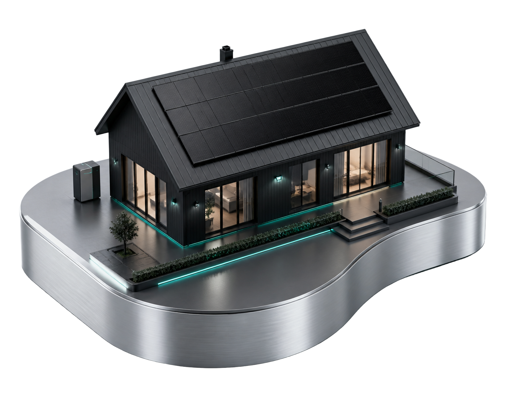

Montrez-nous votre panneau.
Une seule photo suffit. Nous vous disons ce que c'est et ce qu'il faut faire — sans jargon.
Déposez une photo ici, ou cliquez pour choisir
JPG ou PNG de votre panneau solaire
Faites défiler pour comprendre ce qui se passe — et comment une seule photo suffit à tout révéler, en mots que vous comprenez.

Poussière, fientes d'oiseaux, micro-fissure après un orage de grêle. Votre facture grimpe doucement, votre toit a l'air impeccable, et des mois passent avant que quelqu'un ne s'en rende compte.
Pas de drone, pas de technicien, pas de jargon. SolarLens regarde la photo comme le ferait un inspecteur expérimenté — en deux secondes environ, directement dans votre navigateur.
Les particuliers reçoivent une phrase claire et une action concrète. Les techniciens peuvent ouvrir l'onglet détails pour voir les probabilités et la confiance du modèle.
Rien de cassé. Un rinçage à l'eau claire restaure la majorité de la production perdue.
Cliquez sur l'onglet Analyser une photo pour essayer, ou Caméra en direct pour une détection instantanée.
Une seule photo suffit. Nous vous disons ce que c'est et ce qu'il faut faire — sans jargon.
Prenez une photo directement depuis votre appareil — l'IA établit le diagnostic instantanément. Astuce : tenez le téléphone à 1–2 mètres du panneau, en lumière du jour uniforme.
Le modèle tourne entièrement dans votre navigateur via
ONNX Runtime Web — export du même réseau PyTorch entraîné
(ResNet-50 + Squeeze-and-Excitation), sans aucun serveur.
Clean (propre) · Dusty (poussiéreux) · Snow-Covered (neige) · Bird-drop (fientes d'oiseaux) · Electrical-damage (défaut électrique) · Physical-Damage (dommage physique)